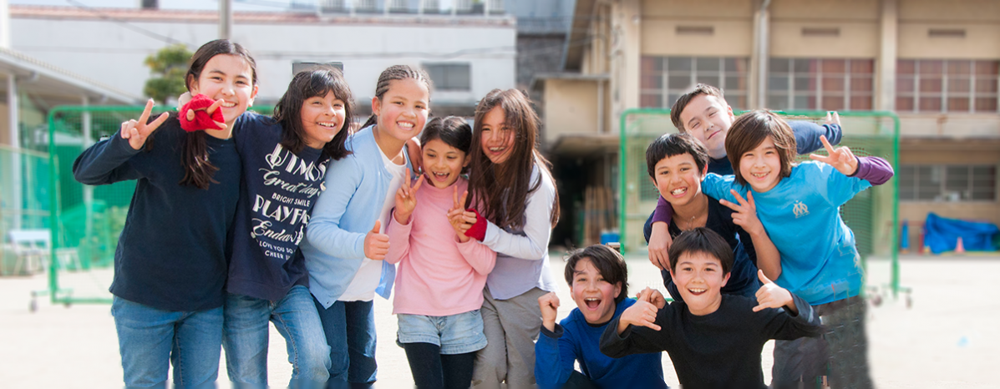

Introduction
Voici déjà un peu plus de ans que l’aventure du Lycée
français international de Kyoto a débuté, avec pour mission d’aider les élèves à acquérir les fondamentaux
des enseignements français élémentaires et secondaires et les préparer au mieux pour le baccalauréat et pour
l'enseignement superieur.
Parti d’un petit groupe de parents qui s’organisent autour d’un projet: offrir la possibilité
d’un avenir francophone pour leurs enfants residents au Japon, dans le Kansai.
Au fil des années, des conventions et des homologations ; L’établissement est devenu une école à part
entière au sein du grand réseau de l’Association de l’Enseignement du Français à l’Étranger.
Nous allons détailler les grandes étapes de cette aventure, vous précisez la situation actuelle et vous
éclairer sur les objectifs du LFIK.
Passé
LFIK: de sa création jusqu’a aujourd’hui
- 1991: L'APEK fonde l'Ecole Francaise du Kansai
- Avec une structure a Kobe, Kyoto et Osaka
- 1996: Ouverture d'une Ecole a Kyoto (8hr/Semaine).
- 1997: L'EFK a Kyoto debute a temps plein (12 élèves).
- Classe unique mais repondant a tous les criteres de l'Education Nationale.
- Premier etablissement a Juraku
- 1999: L'EFK signe une convention avec l'AEFE.
- 2000: Nouvelle classe elementaire et materrnelle
- L'EFK debute le tutorat-cned pour le college a l’Université des Études Étrangères de Kyoto.
- 2003: L'Ecole demenage dans les locaux Taiken.
- 2005: 3e clase primaire et tutorat-cned au Lycée.
- 2011: Homologation de la classe de 6eme.
- 2014: L'Ecole devient le Lycée francais de Kyoto
- 2017: L'Ecole demenage au site de Yurin et devient le Lycée francais international de Kyoto.

Fetes, Voyages Scolaires et Autres Evenements Marquants du LFIK
Chaque annee, les eleves de Primaire et/ou de Secondaire participent a un voyage scolaire.
Le 23 avril 2018, a 9:00 les enfants du CP jusqu'au CM2 sont partis a Hanase. Apres 4 jours a Hanase,
les élèves sont revenus le 27 avril a 14:30.
Le vendredi 20 octobre 2017 il y a eu l'inauguration, une fete pour celebrer les 20 ans du lfik.
Monsieur L’Ambassadeur de France au Japon, Monsieur Laurent Pic, Monsieur le maire de la ville de Kyoto,
Monsieur Kadokawa, Monsieur Bruno Valéry, Coordonnateur AEFE de la zone Asie-Pacifique,
Monsieur Terada, président du conseil municipal et Monsieur Yamada, président du quartier de Yurin sont
tous venu feliciter le LFIK.
Plus de photos disponibles sur la partie publique du blog du Lycée français international de Kyoto


Présent
Les Acteurs du LFIK Aujourd'hui
Le LFIK compte aujourd'hui un peu plus de 150 eleves.

L'equipe administrative et
pedagogique tres efficace, comprant: Emmanuel Resbeut (directeur de l'école),
Mathieu Lecacheur (directeur financier et administratif), Kazue Oike, Marie Precheur,
Veronique Breffi, Takako Bocket, Frederic Bergeron ainsi que tous les enseignants.
Le comité de gestion se compose de 11 membres bénévolent: Nicolas Prévost, Florian Rivoal,
Alan Bogossian, Rodolphe Gicquel, Sae Cardonnel, Chinami Pretet, Barbara Lemaire, Priscilla Normandie Levi, Eric Avocat, Stéphane Delprat et Romain Jourdan

Emmanuel RESBEUT, Directeur-chef d'établissement du LFIK
- 2015-Présent: Directeur et chef d’établissement du LFK puis du Lycée français international de Kyoto
- 2005-2014: Enseignant au lycée français international de Tokyo
- 2001-2003: Enseignant au lycée français de Kuala Lumpur
- 1999-2001: Enseignant au lycée franco-mexicain de Mexico

Nicolas PREVOST, President du Comite de Gestion du LFIK
- 2014-Présent: Professeur agrégé, Sciences Cardiovasculaires, Université de Kyoto Gakuen
- 2009-2014: Professeur adjoint, Université de Kyoto
- 2004-2008: Chercheur postdoctoral, Université de California, San Diego
- 1997-2004: Chercheur étudiant, Université de Pennsylvania
Organisation des classes
Le Primaire et le Secondaire jusqu'a la 5e sont en cours directs.
Les classes sont homologues par l'AEFE jusqu'a la 6e.
Tout le college va passer en cours directs a partir de la rentree 2019
et devrait etre dans la foulee homologue par l'AEFE.
Toutes les classes de Primaire et de Secondaire devraient passer en niveau simple
a partir de la rentree 2020.
- PS-MS: Classe double
- GS: Classe simple
- CP: Classe simple
- CE1-CE2: Classe double
- CM1-CM2: Classe double
- 6e-5e: Classe double
Secondaire de la 4e jusqu'a la Tle sont encore sous tuorat-CNED
4e et 3e passeront en cours direct a la rentree 2019-20.
Tout le Lycée va passer en cours directs, en deux temps: rentree 2020
pour la 2nde et 2021 pour la 1ere-Tle et devrait etre dans la foulee homologue
par l'AEFE.
- 4e: Classe simple
- 3e: Classe simple
- 2nde: Classe simple
- 1ere-Tle: Classe double
La ville de Kyoto et le site du Lycée Francais
Une Ville Agreable
Kyoto est une ville tres agreable a vivre. C'est a la fois une grande metropole avec
environ 1.5 million d'habitants, tres animee par endroit, avec chaque
annee pres de 55 millions de touristes qui visitent la ville, mais qui a malgre tout su garder a plusieurs
endroit une atmosphere de petit village.
Le velo reste en toute saison le meilleur moyen de parcourir la ville, la ville etant en grande partie plate. C'est une des rares ville ou
les cyclistes ont de la place et peuvent rouler en toute securite a n'importe quel moment
de la journee: a Kyoto comme dans le reste du Japon, les trotoirs sont partages entre
cyclistes et pietons).
D'autre part, la ville est entouree de montagnes et il est possible de faire de nombreuse randonnees. La ville possede egalement une tres belle riviere, a l'eau
tres claire: la riviere Kamo. Le lac de Biwa est aussi tres proche.
C'est une ville tres peu dense: seulement 1 800 habitants au km2 (contre 22 000 pour Paris
et 6 200 pour Tokyo). La ville de Kyoto essaie en effet de limiter la hauteur des immeubles
afin de preserver l'atmosphere de la ville.
Culture, Education et High-Tech
Ancienne capitale du Japon (de 794 à 1868), elle reste le cœur culturel et
religieux du pays avec ses 2 000 temples et sanctuaires, ses palais, ses ponts, ses jardins
et son architecture. L'histoire de Kyoto permet la culture d'une grande variété de légumes.
Kyoto est un des centres universitaires les plus importants du pays, et accueille 37
établissements d'éducation supérieure. L'importante Université de Kyoto constitue une
des deux plus prestigieuses universités du Japon et est considérée comme une des meilleures
université en Asie et dans le monde par les classements internationaux;
dix de ses chercheurs ont notamment obtenu le Prix Nobel. Les étudiants représentent
environ 10 % de sa population.
Pardoxalement, malgre son cote traditionnel, Kyoto a toujours attire de nombreuses
entreprises tech / électronique. La ville accueille en effet les sièges de Nintendo
(et d'autres entreprises liees aux Jeux videos), Omron Corporation, Kyocera (Kyoto Ceramics),
Shimadzu. LINE y a egalement ouvert recemment un centre de developement ainsi que plusieurs
autres startups tech. C'est egalement la que le géant du textile Wacoal Corporation ainsi
que le constructeur d'automobiles Mitsubishi Motors ont etablis leur sieges.
L'etablissement et le site du Lycée francais international de Kyoto
Notre école se situe en plein millieu de Kyoto, a proximite de la gare de Kyoto et juste en dessous du palais imperial. Cet emplacement est tres agreable et pratique et facilite l'acces a notre école. Nous sommes egalement tout pres des grands sites culturels et des grandes universites de la ville.
La cour de notre école mesure exactement 1 272 m2 ce qui nous laisse beaucoup de place pour jouer (principalement au football pendant la recreation). Nous disposons egalement d'un grand gymnase pour le sport (Volley-ball, Badminton, Futsal...) et les spectacles (Concerts et Theatre).
Nous partageons actuellement (et jusqu'en Avril 2020) l'Etablissement de Yurin avec l'Ecole Maternelle Japonaise de Yobai. Apres le depart de Yobai, nous prevoyons d'occupper l'ensemble du batiment, et nous pourrons alors passer progressivement toutes nos classes en classes simples et faire un plus grand nombre d'APS.
Plus d'information sur nos pages dediees concernant l'
Acces et les Contacts ainsi que pour voir
toutes les photos de notre etablissement.
La Vie Scolaire
Frais de scolarite
Primaire
- maternelles: 750 000 ¥
- elementaires: 750 000 ¥
Secondaire
- college: 836 000 ¥
- lycée (2nde): 770 000 ¥
- lycée (1ere-Tle): 840 000 ¥
Calendrier
L'année scolaire se divise en cinq périodes de 6 semaines de cours.
Les periodes de cours sont separées par quatre périodes de 2 semaines de vacances: Toussaint, Noël, Hiver et Pâques.
Elle se termine par une cinquieme période de vacance qui dure deux mois (Eté).
Horaires Primaires et
Secondaires
L’école commence a 8h30 et elle fini a 15h30 pour les maternelles (mercredi jusqu'a 14h30) et les primaires.
Pour les secondaires, les cours commencent a 8h30 et se terminent entre 16h30 et 17h25.
Les Activites PeriScolaires
Il y a de nombreuses Activites PeriScolaires au LFIK: sports, activites artistiques, langues...
Nous disposons egalement d'une mediatheque ou il y a beaucoup de livres en francais mais aussi en japonais et en anglais, des magazines et des DVD.
Le cine-club est ouvert aux élèves du secondaire. Plusieurs fois par an, ils peuvent voir des film le vendredi soir.
Les emissions de la Radio-Web du LFIK sont animees par les élèves.
Futur et Evolution
Projet d'Etablissement 2019-2022
De par ses effectifs, si le LFIK attache une grande importance à la langue et à la culture japonaises, il veut proposer aussi une plus grande
place à l’étude de l’anglais. Un rééquilibrage autour de l’apprentissage des deux langues ainsi que de leur progressivité est en cours depuis la
rentrée 2018.
La proportion d’élèves franco-japonais étant très importante et la population d’élèves franco-
français demeurant encore faible, le travail sur la maîtrise de la langue française reste la priorité.

Grands Axes de la Strategie 2019-2022
- Sortie programmée du cned au collège puis au lycée et passage en niveaux simples
- Mise en place de parcours personnalisé de langues (deux sections internationales: Japonais et Anglais)
- Mieux aider les élèves dans leur orientation en système français comme en système japonais
- Créer la communauté des anciens élèves et leur transmission d’expérience à leur pairs et aux plus jeunes
Evolution des Effectifs depuis 1997

Credits
Cette page a ete pensée et concue par les élèves du LFIK (par ordre alphabetique): Alan (4e), Gabriel (4e), Grégory (parent d'élève), Jun (CM2), Hugo (CM2), Hugo (6e), Luc (CM1), Lucas (4e), Marc (CM2), Nathaël (4e), Yunosuke (CE2).
Elle a été réalisée du 6 au 10 Mai 2019 dans le cadre d'un projet encadré par l'école de
programmation Kyoto Lesson.
Ce projet avait pour but de familiariser les eleves avec :
- la creation d'un site web (html, css/bootstrap)
- la gestion de version sous Git
- le deploiement d'un site sur GitHub Pages
Les differentes evolutions de cette page sont visibles ici et ici. La derniere version faite par les eleves est disponible ici. Au-dela, toutes les modifications ont ete effectuees par le personnel du LFIK.